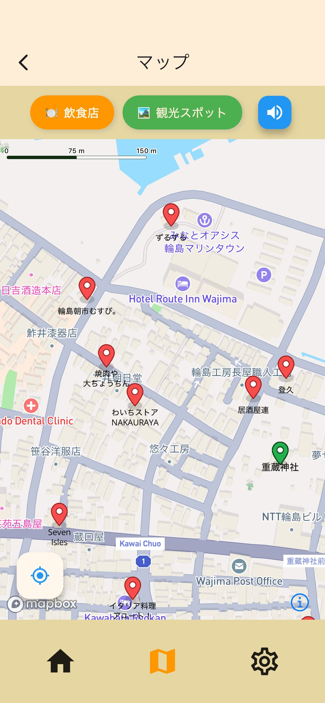

観光マップ
能登の観光スポットと飲食店が表示されているGPSマップ。
観光スポットに行くと、スポットを紹介するナレーション音声が流れます。

人も、風景も、想いも、めぐるアプリ。
能登には、美しい自然や四季折々の風景、能登牛や新鮮な魚介類、地酒など多彩な食文化があります。訪れる人々に、そうした能登の魅力をめぐり、楽しんでいただきたいです。
このアプリを開発する過程で、地元の方々をはじめ、本当に多くの方々にご協力いただきました。活動を通じてめぐり逢えた方々とのご縁は、私たちにとって一生の宝物です。
時代や時間の流れの中で、能登にたくさんの楽しいこと、幸せなこと、嬉しいことがめぐってくることを願っています。
能登の観光スポットと飲食店が表示されているGPSマップ。
観光スポットに行くと、スポットを紹介するナレーション音声が流れます。
能登で活動している方へのインタビューを元に作成した記事を収録。
震災から現在に至るまでの歩みを知ることができます。
震災/復旧/復興の様子がわかる場所を観光スポットとしてご紹介。
自宅からでもナレーション音声が楽しめます。
能登で営業中の飲食店を検索。
みんなが投稿した口コミで詳しい情報を知れます。

緊急時に使える指定緊急避難場所情報を表示したGPSマップ。
オフライン状態でも使うことができます。
新機能を鋭意開発中です。
アップデートをお待ちください。